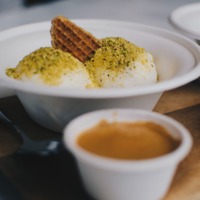
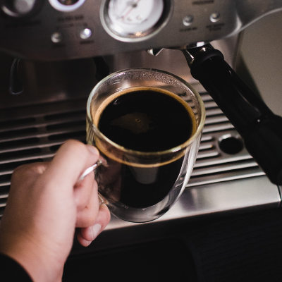
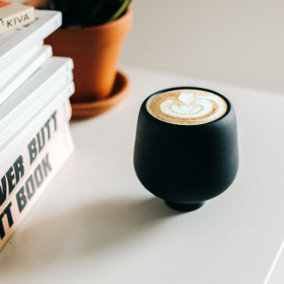
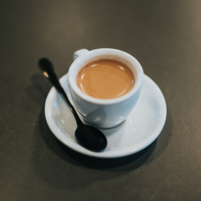
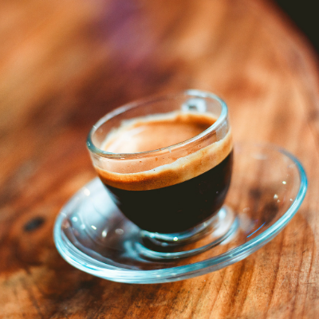
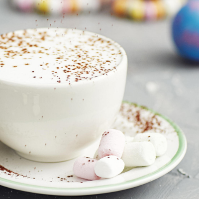
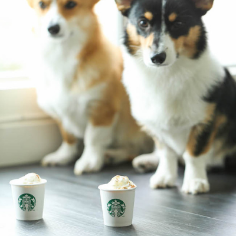

AFFOGATOPlace 2 small scoops of ice cream (coffee, chocolate or vanilla) in a coffee cup, then pour in a shot of espresso or 3 tablespoons strong brewed coffee. Top with shaved dark chocolate and chopped hazelnuts. |
AMERICANOMake a shot of espresso coffee and pour it into a 6-ounce cup. Add boiling water into the cup until the coffee reaches the top. Have steamed milk on the side to add, along with a sugar cube. |
CAFFE LATTE
Heat milk in a saucepan set over medium-low heat. Whisk briskly with a wire whisk to create foam. Brew espresso and pour into 4 cups. Pour in milk, holding back the foam with a spoon. Spoon foam over the top. |
CAFFE MOCHA
Microwave milk on high 1 to 1 1/2 minute or until hot but not boiling. Whisk until foamy.Microwave chocolate syrup in microwave-safe coffee cup on high 20 seconds. Stir in coffee.Add milk. Top with whipped cream.Garnish with sprinkles. |
CAPPUCCINOPlace milk in a measuring cup. Microwave on high for 1 minute or until milk is hot and small bubbles form around edge of cup. Place a metal whisk in cup; whisk vigorously. Remove foam to a small measuring cup. Continue whisking until foam measures 1/3 cup.Pour Easy Espresso into a mug; pour in remaining hot milk. Spoon foam over top and serve immediately. |
COLD BREW COFFEE
Steep 100 gms of freshly ground coffee (Prefer 100% Arabica beans) in 1 Ltr of water for 20+ hours in an airtight jar. (We prefer the ratio of coffee to water as 1:10) Use a Nut bag for filtering. Use the filtered coffee to make Iced or hot coffees. |
EXPRESSOPut the coffee powder and sugar in a coffee mug. Add a few drops of water. Stir vigorously with a spoon and soon you will see that the coffe and sugar form a whitish shiny paste. Boil the milk and water together. Pour this from a little height into the mug so that the coffee froths up. Sprinkle a little drinking chocolate on top for effect. |
FLAT WHITE
Pull a double espresso into a cup or glass. Steam the milk to 55–62 °C.To make the milk velvety and smooth and disperse any bubbles, give the pitcher a thump on the counter and swirl the milk lightly around the pitcher. Make a latte art pattern on the surface of the flat white. |
ICED LATTE
Mix the hot espresso with the sugar until it dissolves.Fill a glass with ice and stir in the sweetened coffee. Pour over the milk and stir until combined. |
PUMPKIN SPICE LATTE
Start by heating milk, pumpkin puree, sugar, pumpkin pie spices, and vanilla extract on the stove. Coconut or almond milk would be delicious. Then combine the pumpkin spice milk with strong coffee. Pour mixture into mugs and add whipped cream.Serve immediately. |
RISTRETTODose 7-9 grams of ground coffee for a single shot basket portafilter.Tamp carefully. Place the portafilter back to the grouphead and start brewing.Yield 15 ml of liquid at around 20 seconds. Drink up and enjoy. |
LATTE MACCHIATO
Froth the milk using the steam nozzle of your Nespresso machine or the Aeroccino milk frother Place the frothed milk into a large recipe glass.Prepare the capsule of the selected coffee in espresso (40 ml /1,5 oz) directly over the frothed milk. Add sugar to taste or push the one button on the Lattissima+ machine |
Special Attraction |
|
BABYCCINOPour milk foam into an espresso cup. Add cocoa or cinnamon powder on top. If wanted garnish with small marshmallows. |
PUPPUCCINOCombine yogurt, pumpkin puree, old fashioned oats and 1 cup ice in blender until smooth. Serve immediately, garnished with whipped cream and cinnamon, if desired. |